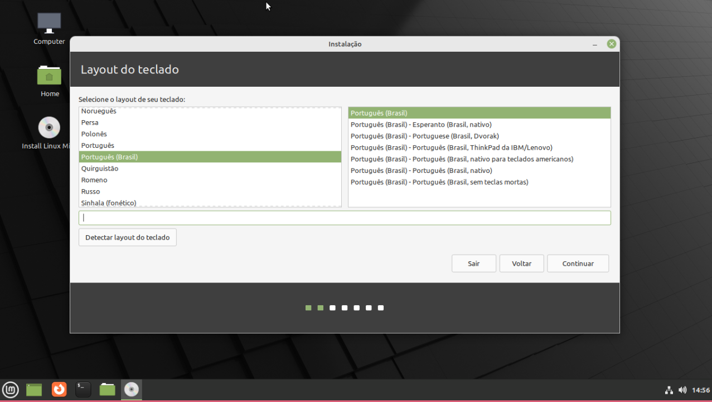
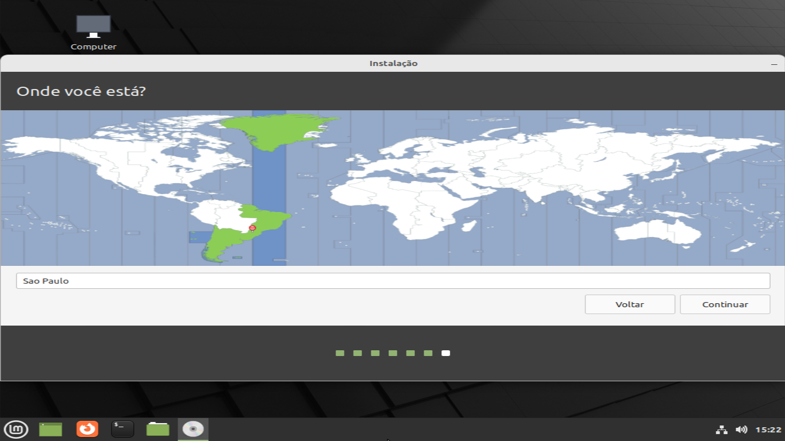
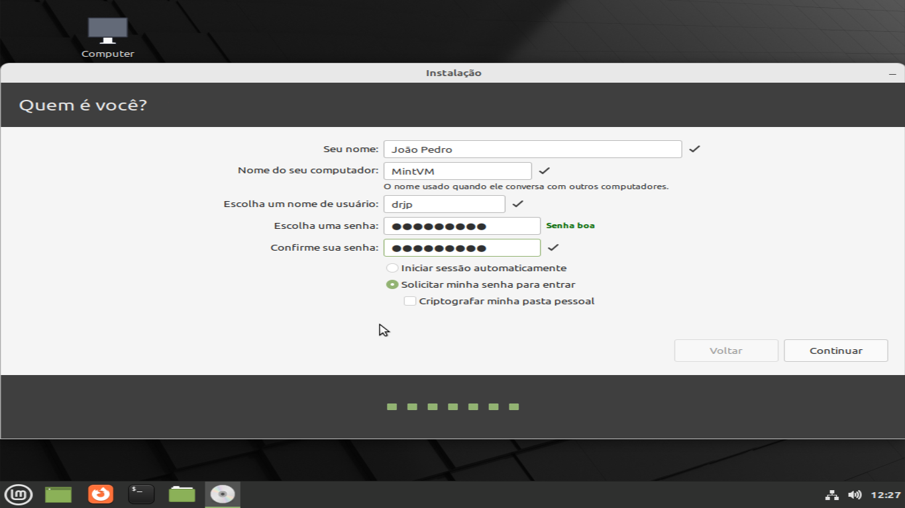
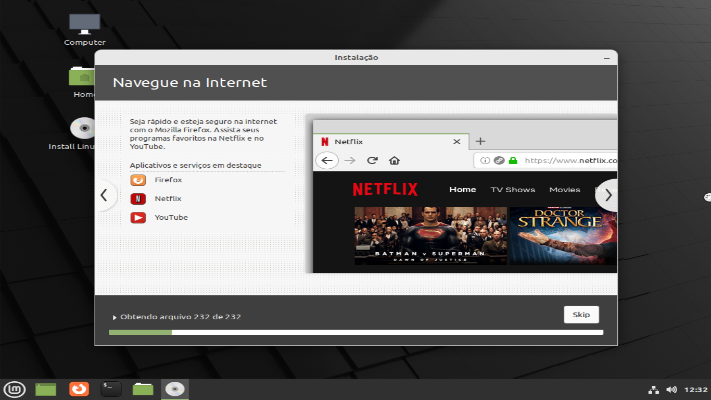

Instalação
Levando em conta que voce já escolheu sua versão do Linux Mint(Eu recomendo o cinnamon) e fez um pendrive bootavel com ele, entre no pendrive pela bios do seu computador e de enter na primeira opção do menu do linux mint.
Depois de clicado no instalador, selecione a opção Português do Brasil, o sístema deverá mudar para português
O próximo passo é configurar o layout do teclado, como na foto acima, ele deve reconhecer o layout do teclado automáticamente, mas sempre é bom testar se todos os simbolos estão funcionando no campo de escrita.
Depois de avançar, clique em Instalar codecs multimídia, eles serão necessários para reproduzir alguns tipos de videos.
CUIDADO!
O próximo passo é fazer o particionamento do disco, ou seja, apagar o disco, para instalar o sistema, e essa é a parte mais importante da instalação. certifique-se que fez backup de todos os dados que tinha no seu outro sistema, pois eles serão destruídos.
Selecione a opção apagar o disco e reinstalar o linux mint, e depois, instalar agora
A próxima etapa é selecionar o seu local, o instalador deve reconhecer automaticamente onde você está, mas, se ele errar, você pode clicar no mapa onde você está:
Como sempre, clique em continuar.
O próximo passo é configurar seu nome, nome de usuário, nome da máquina, e senha. Aqui como eu configurei o meu. sinta-se livre para colocar oque quiser nos campos:
Depois disso, a instalação do sístema em si começa, mas não se preocupe, ele irá instalar sozinho e automáticamente ;)
Enquanto o sistema é instalado, algumas informações dele aparecerão, elas são ótimas para novos usuários, então certifique-se de ler-las
Depois de concluída a instalação, clique em reinicíar agora.
Remova o pendrive e aperte enter.
Faça login e pronto, você está no seu sistema, pronto para uso!